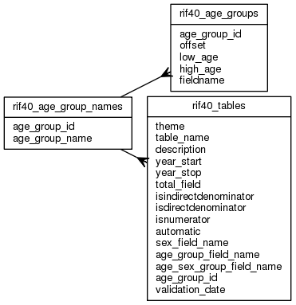

| Table: rif40.rif40_age_group_names | |||
| RIF Age group names | |||
| Size: medium, Select frequency: medium, Update frequency: medium | |||
| Columns | |||
| Name | Type | Constraints | Description |
| age_group_id | SMALLINT | NOT NULL | AGE_GROUP_ID |
| age_group_name | VARCHAR (50) | NOT NULL | Age Group Name |
| Primary key | |||
| Name | Columns | Description | |
| rif40_age_group_names_pk | age_group_id | ||
| Incoming foreign keys | |||
| Name | Columns | Referencing table | Description |
| rif40_age_group_id_fk | age_group_id | rif40_age_groups | |
| rif40_tables_age_group_id_fk | age_group_id | rif40_tables | |
| Grants | |||
| Role | Actions | ||
| rif_manager | select, insert, delete, update | ||
| rif40 | select, references, insert, delete, update | ||
| PUBLIC | select, references | ||
